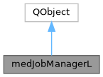

|
MUSICardio 4.2
MUSICardio application created by Inria Epione, IHU LIRYC and Université de Bordeaux
|
Loading...
Searching...
No Matches
|
MUSICardio 4.2
MUSICardio application created by Inria Epione, IHU LIRYC and Université de Bordeaux
|
Manages safe termination of medJobItemLs (QRunnables). More...
#include <medJobManagerL.h>


Signals | |
| void | cancel (QObject *) |
| void | jobRegistered (medJobItemL *item, QString jobName) |
Public Member Functions | |
| bool | registerJobItem (medJobItemL *item, QString jobName="") |
| bool | unRegisterJobItem (medJobItemL *item) |
| void | dispatchGlobalCancelEvent (bool ignoreNewJobItems=true) |
Static Public Member Functions | |
| static medJobManagerL & | instance () |
Static Protected Attributes | |
| static std::unique_ptr< medJobManagerL > | s_instance = nullptr |
Manages safe termination of medJobItemLs (QRunnables).
All medJobItemLs that are registered here will receive a distributed cancel events when closing the application at will.
The JobItems need to make sure to have implemented the Cancel() method.
| void medJobManagerL::dispatchGlobalCancelEvent | ( | bool | ignoreNewJobItems = true | ) |
dispatchGlobalCancelEvent - emits a cancel request to all registered items
| bool | ignoreNewJobItems - if set (default) the manager will not register any new items |
| bool medJobManagerL::registerJobItem | ( | medJobItemL * | item, |
| QString | jobName = "" |
||
| ) |
registerJobItem - register a job item if you want that the manager sends cancel events to them (highly suggested!) The manager will reject items if not active (see dispatchGlobalCancelEvent)
| const medJobItemL & item | |
| QString jobName short name that will be visible on the progression toolboxes |
| bool medJobManagerL::unRegisterJobItem | ( | medJobItemL * | item | ) |